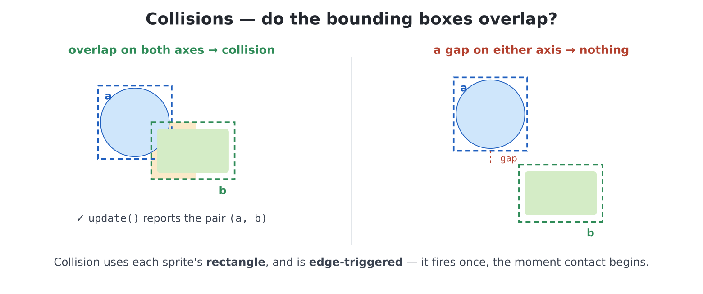

Chapter 17 taught you what smooth motion costs: remember what’s under
each moving thing, erase in the right order, redraw in the right order,
never let the scanout catch you. Honest work — and nobody wants to do it
for twelve things at once. A sprite engine is
that labour, hired: you say what exists and where it wants
to be; the engine does the erasing, restoring, layering and
redrawing — and, the part that makes games suddenly easy, tells
you what bumped into what. The machine’s engine is
pcsprite, it speaks MMBasic’s game dialect fluently, and
its sprites are objects — chapter 14 told you exactly what you’d be
holding.
Games need input, and input is chapter 21’s subject. We borrow two facts, book-style — copy today, master later:
keydown(1) returns the code of the key
held right now (0 if none) — not typed-and-entered,
held, which is what games want. Letter keys report
ord("a")-style codes; special keys have names in the
keyboard module: keyboard.UP,
keyboard.LEFT, keyboard.ESC, and friends.keydown(0) says how
many, and keydown(2), keydown(3)… report the
others. This helper — worth a place in handy.py — answers
“is this key down?” regardless of what else is:from keyboard import keydown
def held(code):
for i in range(1, keydown(0) + 1):
if keydown(i) == code:
return True
return False(The from keyboard import keydown line simply names
where keydown really lives. It costs nothing in a program —
and it is what lets this helper work from inside handy.py
the day it moves there. Chapter 20 tells that story.)
That is the whole loan. Now, sprites.
grabA sprite needs a picture. Chapter 16 loaded sheets from files
(sp.sheet(path, w, h, count) does exactly that,
engine-ready); but in the spirit of owing nobody any artwork, there is a
lovelier way: draw the picture, then grab it off the
screen. edit("duck1.py"):
import pcsprite as sp
import time
d = hdmi.fb()
W = hdmi.width()
H = hdmi.height()
SKY = d.colour(0x203050)
d.fill(SKY)
# draw a duck in the corner, grab it, erase the master
d.ellipse(10, 9, 9, 7, d.colour(YELLOW), True) # body
d.ellipse(20, 5, 5, 4, d.colour(YELLOW), True) # head
d.fill_rect(24, 4, 4, 2, d.colour(ORANGE)) # beak
duck = sp.grab(0, 0, 28, 18, transparent=SKY)
# erase the master
d.fill_rect(0, 0, 28, 18, SKY)
duck.show(50, 120)
# no cursor over the show
console("none")
try:
while True:
duck.x += 2
if duck.x > W:
duck.x = -28
sp.update(vsync=True)
finally:
sp.reset()
# chapter 17's manners
console()Run it: a duck crosses the sky, forever, without smearing and without you erasing anything. Read the pieces:
sp.grab(x, y, w, h, transparent=SKY) copies a rectangle
of pixels into a new Sprite object. The
transparent colour becomes the cut-out (chapter 16’s skip
colour, pre-arranged) — which is why the duck was drawn on sky
colour, and why the grab is followed by erasing the master: the engine
photographs the scenery on first update(), and the master
duck shouldn’t be in the photo.duck.show(x, y) declares it visible;
duck.x += 2 moves it — but nothing happens at
either line. Position and visibility are
requests.sp.update() commits everything in one
pass — every erase, restore and redraw, in the right order, at
the right moment (vsync=True adds chapter 17’s timing, and
paces the loop at 60 frames a second for free). One call per frame,
always last. This deferred style should feel familiar: it is the
F-buffer philosophy — compose in private, reveal at once —
reborn as an API.sp.reset() in the finally collar hides
everything and forgets the engine’s furniture on the way out, however
you leave.Under the hood the engine picks chapter 17’s best tool for the mode —
the overlay layer in RGB320, an F-buffer scenery snapshot
elsewhere (if you repaint the scenery, tell it:
sp.snapshot()). You built both by hand last chapter
precisely so this paragraph would be information, not magic.
Here is the feature that turns motion into games.
sp.update() returns a list of collision
events — (sprite, other) tuples, freshly begun
contacts only:
for a, b in sp.update(vsync=True):
...other can be another Sprite, a Wall
(sp.wall(x, y, w, h) — an invisible collision rectangle,
for floors and fences), or one of the strings "left",
"right", "top", "bottom" — the
screen edges report themselves. Three details, each a design gift:
show(x, y, layer=2), or s.layer = ...).
Sprites collide with their own layer and with layer 0 — so
things that should ignore each other (bullets and the score display; two
clouds) simply live on different layers, and the events list stays
meaningful. Layer 0 is special twice over: it collides with everyone and
it travels with sp.scroll’s scenery (chapter 19
territory).
Sprites also carry small talents you will use immediately:
s.hide(), s.top() (raise in the pile),
s.flip("h") (a mirrored copy — one duck artwork, both
directions), and — for sheet-backed sprites from chapter 16’s
Image.sprites() — s.frame(i) to flip animation
frames.
Coming from MMBasic: this is
SPRITEwholesale — SHOW/HIDE, layers with the same collide-with-own-and-zero rule, walls, edge names, scroll-with-scenery on layer 0, and edge-triggered collision reporting. The difference is ergonomic: sprites are objects, and collisions arrive as a list of pairs fromupdate()instead of interrupt-and-interrogate.
One honest note on scale, straight from the manual: the engine composites live, which is quick for a modest cast (a dozen small sprites is comfortable). Crowds of large sprites are better served by chapter 17’s flip-everything loop — chapter 24 will do exactly that. Right tool, right job.
Fairground rules: ducks cross, you aim, you fire, the machine keeps
score and never lets you argue with it. Ducks on layer 1, crosshair on
layer 2 (so it never “collides” with a duck — only shots do),
held() steering, a fire cooldown, and every pixel of
artwork drawn by the program itself.
edit("gallery.py"):
import pcsprite as sp
import keyboard
def held(code):
for i in range(1, keydown(0) + 1):
if keydown(i) == code:
return True
return False
d = hdmi.fb()
W = hdmi.width()
H = hdmi.height()
SKY = d.colour(0x203050)
d.fill(SKY)
# grassy bank
d.fill_rect(0, H - 60, W, 60, d.colour(MIDGREEN))
hdmi.text("SHOOTING GALLERY", 192, H - 40, d.colour(GOLD), -1, 1,
3)
def grab_and_wipe(w, h):
s = sp.grab(0, 0, w, h, transparent=SKY)
d.fill_rect(0, 0, w, h, SKY)
return s
def make_duck():
d.fill_rect(0, 0, 28, 18, SKY)
d.ellipse(10, 9, 9, 7, d.colour(YELLOW), True)
d.ellipse(20, 5, 5, 4, d.colour(YELLOW), True)
d.fill_rect(24, 4, 4, 2, d.colour(ORANGE))
return grab_and_wipe(28, 18)
def make_cross():
d.fill_rect(0, 0, 17, 17, SKY)
d.ellipse(8, 8, 7, 7, d.colour(RED))
d.line(8, 0, 8, 16, d.colour(RED), 1)
d.line(0, 8, 16, 8, d.colour(RED), 1)
return grab_and_wipe(17, 17)
def make_shot():
d.fill_rect(0, 0, 5, 5, d.colour(WHITE))
return grab_and_wipe(5, 5)
ducks = []
for i in range(3):
duck = make_duck()
# objects accept new attributes!
duck.speed = 2 + i
duck.show(i * 200, 70 + i * 80, layer=1)
ducks.append(duck)
cross = make_cross()
cross.show(W // 2, H // 2, layer=2)
shot = make_shot() # made, not shown
score = 0
cooldown = 0
def hud():
hdmi.text(f"SCORE {score:3}", 8, 8, d.colour(WHITE), SKY, 1,
3)
hud()
console("none")
try:
while not held(keyboard.ESC):
if held(keyboard.LEFT):
cross.x = max(0, cross.x - 4)
if held(keyboard.RIGHT):
cross.x = min(W - 17, cross.x + 4)
if held(keyboard.UP):
cross.y = max(0, cross.y - 4)
if held(keyboard.DOWN):
cross.y = min(H - 17, cross.y + 4)
if cooldown:
cooldown -= 1
if held(ord(" ")) and cooldown == 0:
shot.x = cross.x + 6 # centre the 5x5 shot
shot.y = cross.y + 6
shot.show(shot.x, shot.y, layer=1)
# quarter-second between shots
cooldown = 15
beep(220, 20)
for duck in ducks:
duck.x += duck.speed
if duck.x > W:
duck.x = -28
for a, b in sp.update(vsync=True):
if a is shot or b is shot:
target = b if a is shot else a
if target in ducks:
score += 1
beep(880, 30)
target.x = -28 # respawn at the left
hud()
# the shot exists for one frame
shot.hide()
finally:
sp.reset()
console()Play it. Then read it back with a designer’s eye, because five small decisions carry the whole game:
shot.hide() after update makes firing a
pulse. This shown-for-one-frame pattern is worth stealing for
muzzle flashes, hit sparks, anything instantaneous.duck.speed. Sprites are Python
objects, so your game data rides on them — no parallel lists (chapter
10’s warning), the duck carries its speed. Chapter 14, quietly
compounding.max/min
keeps the crosshair aboard — chapter 17’s DVD-corner lesson as a
one-liner idiom.bg= (SKY) is chapter
15’s eraser trick, still earning.duck1.py, catch the events —
events = sp.update(vsync=True) — and print each one as it
arrives. Add a wall in the duck’s path and watch
(duck, wall) fire exactly once per crossing,
however long the overlap lasts: edge-triggering, seen live.duck.flip("h") returns a mirrored
copy — when a duck is hit, respawn it flying the other way
(flip it, negate speed, start from the right). One duck
artwork, two directions.sp.wall(W // 2 - 4, 0, 8, H - 60) down the
middle, and make ducks bounce off it (a
(duck, wall) event negates that duck’s speed) instead of
wrapping. Invisible geometry, visible behaviour.GAME OVER
card (font 3, centred — chapter 15 maths) showing accuracy percentage,
and scorelib (chapter 12!) keeping the all-time board.
handy.ask_int for “play again?” — your whole toolkit, one
fairground.Image.sprites + s.frame() to flap), drifting
at layered depths, a crab on layer 0 patrolling a wall-bounded seabed.
No collisions needed — this one is about composition..x/.y, move opposite). Pen it: walls forming
three sides of a square, and a win when the sheep’s inside. No shots
fired; entirely position arithmetic — the quiet half of game
design."top" edge. Suddenly leading the
target matters and the game is twice as hard: one changed sprite, a
redesigned game. (Keep the one-frame version too; let players choose
“arcade” or “carnival”.)